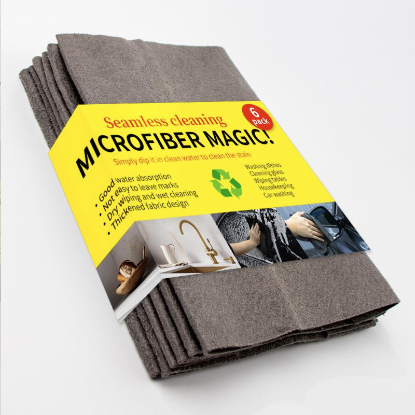

Set 6 Lavete de Curățare din Microfibră Extra Groasă
Set de 6 lavete gri din microfibră extra groasă, reutilizabile, potrivite pentru curățarea uscată și umedă a suprafețelor compatibile.
Produsul are stoc declarat 0 buc. Prețul afișat de 0,00 Lei este o valoare de catalog, nu un preț de vânzare confirmat. Solicită disponibilitatea, prețul final și condițiile comerciale înainte de comandă.
DETALII PRODUS
Descriere
Setul de 6 lavete din microfibră extra groasă este conceput pentru curățarea și întreținerea diferitelor suprafețe din locuință, spații comerciale și autovehicule. Datorită materialului textil absorbant și structurii dense, lavetele reprezintă o soluție practică pentru îndepărtarea prafului, murdăriei, urmelor de apă și a reziduurilor rezultate din utilizarea zilnică.
Materialul din microfibră reprezintă principalul avantaj al produsului, fiind apreciat pentru capacitatea de a reține apa și de a colecta particulele de praf și murdărie de pe suprafețele compatibile. Structura fibrelor facilitează curățarea eficientă, atât prin ștergere uscată, cât și prin utilizarea cu apă, în funcție de tipul suprafeței și de gradul de murdărire.
Designul extra gros oferă o structură textilă densă și rezistentă, concepută pentru absorbția lichidelor și manipularea confortabilă în timpul activităților de curățenie. Grosimea materialului permite utilizarea repetată a lavetelor, contribuind la întreținerea practică a suprafețelor din gospodărie.
Utilizarea multifuncțională permite integrarea lavetelor în numeroase activități de curățare. Acestea pot fi folosite pentru ștergerea blaturilor de bucătărie, chiuvetelor, geamurilor, oglinzilor, mobilierului, electrocasnicelor și anumitor suprafețe auto. Versatilitatea produsului permite utilizarea aceluiași tip de lavetă în mai multe zone, cu respectarea cerințelor de igienă pentru fiecare suprafață.
Capacitatea de absorbție a microfibrei contribuie la colectarea picăturilor de apă și a umezelii, fiind utilă pentru uscarea suprafețelor după spălare. Materialul este conceput pentru a limita apariția urmelor în timpul ștergerii, rezultatele depinzând de suprafața curățată, metoda de utilizare și starea lavetei.
Lavetele sunt potrivite pentru curățarea uscată și umedă, oferind flexibilitate în funcție de activitatea desfășurată. Pentru îndepărtarea prafului pot fi utilizate uscate, iar pentru curățarea murdăriei obișnuite pot fi umezite cu apă sau utilizate împreună cu soluții de curățare compatibile.
Caracterul reutilizabil reprezintă un avantaj practic, deoarece lavetele pot fi spălate și refolosite, în funcție de gradul de uzură și de recomandările de întreținere. Această caracteristică permite reducerea utilizării materialelor de curățare de unică folosință.
Pachetul conține 6 lavete de culoare gri, organizate într-un set compact și prevăzute cu o banderolă de prezentare comercială. Nuanța neutră oferă un aspect practic, iar formatul multipack permite utilizarea lavetelor pentru diferite activități sau repartizarea acestora pe zone distincte de curățare.
Din perspectiva distribuției B2B, setul de lavete din microfibră extra groasă reprezintă o opțiune pentru magazinele de articole pentru casă, comercianții de produse de curățenie, distribuitorii en-gros, magazinele de accesorii auto și platformele marketplace. Configurația de 6 bucăți, materialul reutilizabil și utilizarea multifuncțională permit integrarea produsului în portofolii dedicate întreținerii locuinței, curățeniei profesionale și îngrijirii autovehiculelor.
Caracteristici principale
- Set de 6 bucăți: pachet practic pentru utilizări multiple.
- Material din microfibră: conceput pentru colectarea prafului, murdăriei și absorbția lichidelor.
- Structură extra groasă: material textil dens, potrivit pentru activități repetate de curățare.
- Capacitate ridicată de absorbție: contribuie la colectarea apei și a umezelii de pe suprafețe.
- Curățare uscată și umedă: permite utilizarea lavetelor în diferite activități de întreținere.
- Îndepărtarea prafului: fibrele textile facilitează colectarea particulelor de murdărie.
- Curățarea geamurilor și oglinzilor: potrivite pentru ștergerea suprafețelor din sticlă.
- Întreținerea mobilierului: pot fi utilizate pentru îndepărtarea prafului de pe suprafețele compatibile.
- Utilizare în bucătărie: utile pentru curățarea blaturilor, chiuvetelor și electrocasnicelor.
- Accesorii pentru curățarea auto: pot fi folosite pentru ștergerea și întreținerea suprafețelor compatibile ale autovehiculelor.
- Material reutilizabil: lavetele pot fi curățate și refolosite.
- Textură moale: concepută pentru contactul delicat cu suprafețele, fără a garanta absența zgârieturilor.
- Design textil dens: contribuie la retenția impurităților în timpul ștergerii.
- Utilizare multifuncțională: potrivite pentru locuințe, birouri, garaje și alte spații.
- Compatibilitate cu soluții de curățare: pot fi folosite cu produse adecvate materialului și suprafeței.
- Întreținere practică: pot fi spălate conform recomandărilor producătorului.
- Culoare gri: aspect neutru și practic.
- Format compact: facilitează depozitarea în dulapuri, sertare sau organizatoare de curățenie.
- Pachet economic: 6 lavete într-un singur set.
- Utilizare fără alimentare electrică: nu necesită baterii sau accesorii electrice.
Comandă și informații
Site-ul funcționează ca un catalog B2B. Nu există plată online sau coș de cumpărături. Momentan produsul nu este disponibil în stoc.
Discută pe WhatsApp →DIN ACEEAȘI CATEGORIE